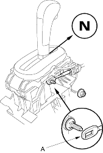
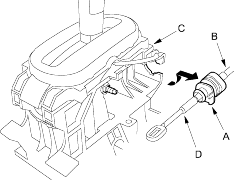
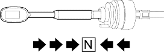
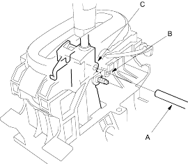

- Shift the transmission into
 position.
position.
- Remove the centre console panel and centre console (see page 20-73).
- Remove the nut securing the shift cable end (A), then separate the cable end from the shift lever assembly.

- Rotate the socket holder (A) on the shift cable (B) toward the shift lever a quarter turn, then slide the holder out to remove the shift cable from the shift cable bracket base (C).
NOTE: Do not remove the shift cable by twisting the shift cable guide (D).

- Push the shift cable until it stops, then release it. Pull the shift cable back two steps so that the shift position is in

- Turn the ignition switch ON (II) and verify that the position indicator light comes on.
- Turn the ignition switch OFF.
- Insert a 6.0 mm (0.24 in.) pin (A) through the positioning hole (B) on the shift lever bracket base and into the positioning hole (C) on the shift lever assembly.
